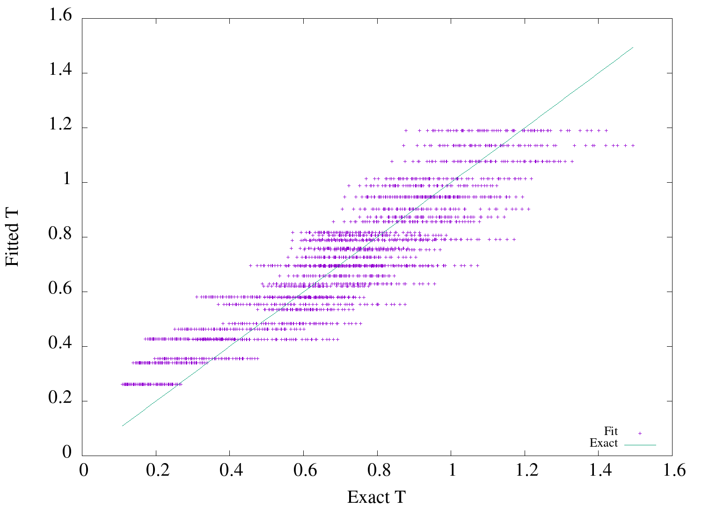

Table of Contents
1 Simple Fit
Simpler: T = a(Nh)b is the best fit among the following 3.
1.1 T = a*Nb*hc
(max-fit-%diff (lambda (x a b c) (destructuring-bind (n h bw bx by) x (* a (expt n b) (expt h c)))) '(1 1 1) :save '/simple-fit)
| max %diff | R2 | rmse | Params | Covariance |
| 62.875779 | 0.803489 | 0.116500 | (0.039960 0.444932 1.708499) | (0.000185 0.002842 0.056292) |
(scatter-plot /simple-fit "dbsimple-fit.png")

1.2 Simpler: T = a(Nh)b
(max-fit-%diff (lambda (x a b) (destructuring-bind (n h bw bx by) x (* a (expt (* n h) b) ))) '(1 1) :save '/simpler-fit)
| max %diff | R2 | rmse | Params | Covariance |
| 84.965419 | 0.622890 | 0.161352 | (0.190189 0.448564) | (0.001106 0.002836) |
(scatter-plot /simpler-fit "dbsimpler-fit.png")
1.3 Simplest: T = a(N)b
(max-fit-%diff (lambda (x a b) (destructuring-bind (n h bw bx by) x (* a (expt (* n) b) ))) '(1 1) :save '/simplest-fit)
| max %diff | R2 | rmse | Params | Covariance |
| 87.787155 | 0.487989 | 0.188010 | (0.379125 0.372880) | (0.001475 0.002513) |
2 Sensitivity Analysis
with Nh only, the variation at higher T is very substantial. Hence other parameters must also be playing a great role in T.
Is it bw or bx,by that play greater role.
Sensitivity of bw is max for h=4,bx=2,by=2. and descreases with decreasing n.
(sensitivity :bw (filter-data :n 10 :h 4 :bx 2 :by 2))
0\.1049257842319129d0
Sensitivity with bx doesn't change much with bw.
(sensitivity :bx (filter-data :bw 6 :n 10 :h 4))
0\.04411470185148875d0
Hence timeperiod is more sensitive to bay width than with bay counts
3 Bay width
To incorporate bay width in the relation for fundamental time period. Lets see the variation of T with bw.
(with-plot "dbbw.png" (setup :xlabel "bw" :ylabel "tp") (loop for n from 2 to 12 by 2 do (ezplot (mapcar (lambda (d) (destructuring-bind (x tp) d (list (third x) tp))) (filter-data :n n :bx 2 :by 2 :h 4)) :title (format nil "n=~d" n))))
This shows that the time period changes almost linearly with bay width. and the slope decreases for higher N.
4 Bx,By
(with-plot "dbbx.png" (setup :xlabel "bx" :ylabel "tp") (loop for n from 2 to 12 by 2 do (ezplot (mapcar (lambda (d) (destructuring-bind (x tp) d (list (fourth x) tp))) (filter-data :n n :bw 6 :by 5 :h 4)) :title (format nil "n=~d" n))))
This shows that T varies log linear with bx.
Local Variables: org-export-babel-evaluate: nil End: